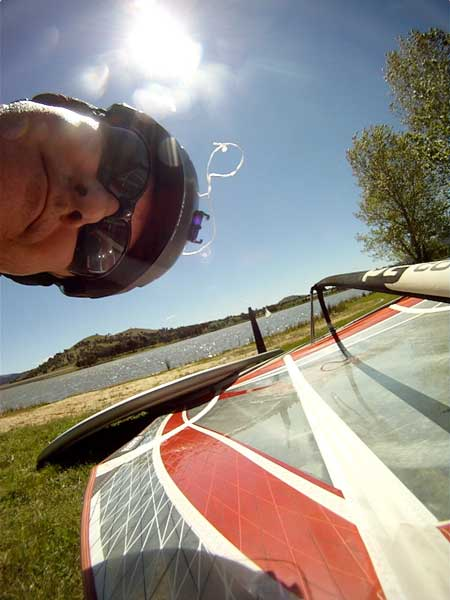
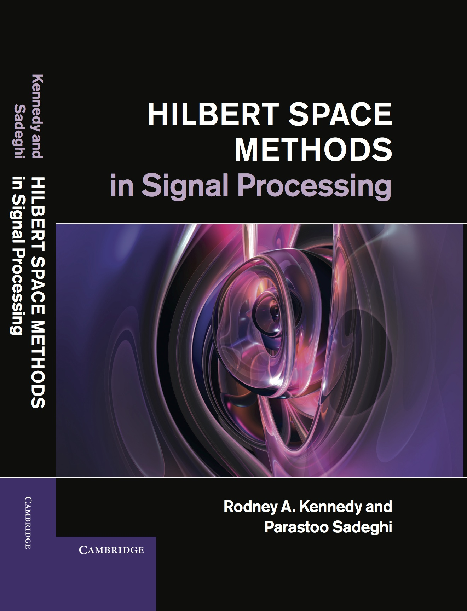

|
Research School of Engineering
College of Engineering and Computer Science
Australian National University
Biography
|
 |
Rod Kennedy has been Professor in Engineering at the Australian National University since 2000 and is currently the Head of the Applied Signal Processing research group and the Associate Director (Education) within the Research School of Engineering. He is an electrical engineer with research specialization in wireless communications, signal processing and audio signal processing.
He has been Head of the Departments of Information Engineering and Telecommunications Engineering in the Research School of Information Sciences and Engineering between 1994 and 2008, and Director of Research 2009-2010. Professor Kennedy has received over 30 external grants and industry contracts/university consultancies including 15 ARC grants. In addition he has a leading participant in major research centers including the Cooperative Research Centre for Robust and Adaptive Systems (CRASys), National ICT Australia (NICTA) and the ARC Communications Research Network (ACoRN).
|
He is an IEEE Fellow and has published in excess of 320 journal papers, conference papers and patents, and has supervised over 40 PhD students. He was an Associate editor for 11 years in the IEEE Transactions on Communications and a member of a number of journal editorial boards. He is a former QEII Fellow and recipient of a number awards including the ATERB medal and the UNSW University medal.
News
May 2014 — Preparing presentation for Royal Society meeting “Science on the Sphere” to be held on 14-15 July.
May 2014 — Three 2014 ICASSP papers have been presented in Florence (these can be downloaded below).
Mar 2014 — 22nd Int. Conf. on Telecommunications ICT will be held in Sydney,
Australia, 27-29 April 2015, right after ICASSP 2015 in Brisbane.
Feb 2014 — Three 2014 ICASSP papers have been accepted and will be presented in Florence in May.
Jan 2014 — Two 2014 ICC papers have been accepted and will be presented in Sydney in June.
Research Interests
signal processing theory and algorithms
with applications in wireless communications, audio and acoustics, and astrophysics
signal representations, signal concentration, dimensionality, uncertainty principles
Hilbert space and spectral methods
time-frequency and spatio-spectral methods
relay cooperative networks
timing, frequency and carrier synchronization
decode-and-forward (DF) and amplify-and-forward (AF) relaying networks,
channel estimation, multi-parameter estimation
2-sphere or spherical domain signal processing, commutative anisotropic convolution
medical image registration
compressed sensing methods for sparse systems
Recent Publications
|
 |
My Recent Publications: most can be found here at:
which also lists my arxiv.org preprints. This listing excludes my 2013 book, (written with co-author Dr Parastoo Sadeghi),
and excludes book chapters, papers in Physics journals (such as JASA) and most conference papers.
A reverse chronological list of most of my publications can be obtained by following this link.
|
Recent Submissions (including arXiv preprints)
[1]
N. Ding, P. Sadeghi, and R. A. Kennedy, "Structured Optimal Transmission Control in Network-coded Two-way Relay Channels", IEEE Trans. Signal Process., submitted, 2014 (preprint arXiv:1310.7679).
PDF: 1310.7679
Google-Scholar: [1]
arXiv: http://arxiv.org/abs/1310.7679
Abstract: This paper considers a transmission control problem in network-coded two-way relay channels (NC- TWRC), where the relay buffers random symbol arrivals from two users, and the channels are assumed to be fading. The problem is modeled by a discounted infinite horizon Markov decision process (MDP). The objective is to find a transmission control policy that minimizes the symbol delay, buffer overflow and transmission power consumption and error rate simultaneously and in the long run. By using the concepts of submodularity, multimodularity and L-convexity, we study the structure of the optimal policy searched by dynamic programming (DP) algorithm. We show that the optimal transmission policy is nondecreasing in queue occupancies or/and channel states under certain conditions such as the chosen values of parameters in the MDP model, channel modeling method, modulation scheme and the preservation of stochastic dominance in the transitions of system states. The results derived in this paper can be used to relieve the high complexity of DP and facilitate real-time control.
@article{Ding-T-SP-16372-2013,
title = {Structured Optimal Transmission Control in Network-coded Two-way Relay Channels},
author = {Ding, N. and Sadeghi, P. and Kennedy, R. A.},
journal = {{IEEE} Trans. Signal Process., submitted},
year = {2014 (preprint arXiv:1310.7679)}}
[2]
N. Ding, P. Sadeghi, and R. A. Kennedy, "Discrete Stochastic Approximation for Cross-layer Transmission Control in Wireless Communications", IEEE Trans. Wireless Commun., submitted, 2014 (preprint arXiv:1401.3922).
PDF: 1401.3922
Google-Scholar: [link]
arXiv: http://arxiv.org/abs/1401.3922
Abstract: This paper proposes the use of discrete stochastic approximation (DSA) algorithm for a cross- layer adaptive modulation problem in wireless communications. In this system, the throughput in the physical (PHY) layer and quality of service (QoS) incurred by the queueing effects in the data link layer are required to be optimized simultaneously and in the long run. By assuming Markov decision process (MDP) modeling, we prove that the optimal transmission policy is characterized by a queue threshold vector and can be determined by a multivariate discrete convex optimization problem if the dynamic programming (DP) is submodular. We then propose to use DSA, a subgradient-based stochastic approximation (SA) algorithm with proven convergence rate, for approximating the optimal value of the queue threshold vector. By an application in a cross-layer transmission control problem in a network-coded two way relay channel (NC-TWRC), we compare the performance of DSA with that of simultaneous perturbation stochastic approximation (SPSA), the commonly used SA algorithm for threshold policy optimization problems. The results show that DSA converges faster than SPSA resulting in lower and controllable computational cost.
@article{Ding:2014-TW-Jan-14-0089,
title = {Discrete Stochastic Approximation for Cross-layer Transmission Control in Wireless Communications},
author = {Ding, N. and Sadeghi, P. and Kennedy, R. A.},
journal = {{IEEE} Trans. Wireless Commun., submitted},
year = {2014 (preprint arXiv:1401.3922)}}
[3]
O. H. Salim, A. A. Nasir, H. Mehrpouyan, W. Xiang, S. Durrani, and R. A. Kennedy, "Channel, Phase Noise, and Frequency Offset in OFDM Systems: Joint Estimation, Data Detection, and Hybrid Cramer-Rao Lower Bound", IEEE Trans. Commun., 2014.
PDF: 1311.6853v1-preprint.pdf
Google-Scholar: [link]
[4]
Z. Khalid, R. A. Kennedy, and J. D. McEwen, "Slepian Spatial-Spectral Concentration on the Ball", Appl. Comput. Harmon. Anal., submitted, 2014 (preprint arXiv:1403.5553).
PDF: 1403.5553
Google-Scholar: [link]
arXiv: http://arxiv.org/abs/1403.5553
Abstract: We formulate and solve the Slepian spatial-spectral concentration problem on the three-dimensional ball. Both the standard Fourier-Bessel and also the Fourier-Laguerre spectral domains are considered since the latter exhibits a number of practical advantages (spectral decoupling and exact computation). The Slepian spatial and spectral concentration problems are formulated as eigenvalue problems, the eigenfunctions of which form an orthogonal family of concentrated functions. Equivalence between the spatial and spectral problems is shown. The spherical Shannon number on the ball is derived, which acts as the analog of the space-bandwidth product in the Euclidean setting, giving an estimate of the number of concentrated eigenfunctions and thus the dimension of the space of functions that can be concentrated in both the spatial and spectral domains simultaneously. Various symmetries of the spatial region are considered that reduce considerably the computational burden of recovering eigenfunctions, either by decoupling the problem into smaller subproblems or by affording analytic calculations. The family of concentrated eigenfunctions forms a Slepian basis that can be used be represent concentrated signals efficiently. We illustrate our results with numerical examples and show that the Slepian basis indeeds permits a sparse representation of concentrated signals.
@article{Khalid-ApplComputHarmonAnal,
title = {Slepian Spatial-Spectral Concentration on the Ball},
author = {Khalid, Z. and Kennedy, R. A. and McEwen, J. D.},
journal = {Appl. Comput. Harmon. Anal., submitted},
year = {2014 (preprint arXiv:1403.5553)}}
[5]
Z. Khalid, R. A. Kennedy, and J. D. McEwen, "An Optimal-Dimensionality Sampling Scheme on the Sphere for Fast Spherical Harmonic Transforms", IEEE Trans. Signal Process., submitted, 2014 (preprint arXiv:1403.4661).
PDF: 1403.4661
Google-Scholar: [link]
arXiv: http://arxiv.org/abs/1403.4661
Abstract: We develop a sampling scheme on the sphere that permits accurate computation of the spherical harmonic transform and its inverse for signals band-limited at L using only L2 samples. We obtain the optimal number of samples given by the degrees of freedom of the signal in harmonic space. The number of samples required in our scheme is a factor of two or four fewer than existing techniques, which require either 2L^2 or 4L^2 samples. We note, however, that we do not recover a sampling theorem on the sphere, where spherical harmonic transforms are theoretically exact. Nevertheless, we achieve high accuracy even for very large band-limits. For our optimal-dimensionality sampling scheme, we develop a fast and accurate algorithm to compute the spherical harmonic transform (and inverse), with computational complexity comparable with existing schemes in practice. We conduct numerical experiments to study in detail the stability, accuracy and computational complexity of the proposed transforms. We also highlight the advantages of the proposed sampling scheme and associated transforms in the context of potential applications.
@article{Khalid-T-SP-17012-2014,
title = {An Optimal-Dimensionality Sampling Scheme on the Sphere for Fast Spherical Harmonic Transforms},
author = {Khalid, Z. and Kennedy, R. A. and McEwen, J. D.},
journal = {{IEEE} Trans. Signal Process., submitted},
year = {2014 (preprint arXiv:1403.4661)}}
[6]
A. A. Nasir, X. Zhou, S. Durrani, and R. A. Kennedy, "Wireless Energy Harvesting and Information Relaying: Adaptive Time-Switching Protocols and Throughput Analysis", IEEE Trans. Wireless Commun., submitted, 2014 (preprint arXiv:1310.7648).
PDF: 1310.7648
Google-Scholar: [1]
arXiv: http://arxiv.org/abs/1310.7648
Abstract: This paper considers amplify-and-forward (AF) and decode-and-forward (DF) relaying networks where an energy constrained relay node first harvests energy through the received radio-frequency signal from the source and then uses the harvested energy to forward the source information to the destination node. We propose adaptive time- switching protocols for wireless energy harvesting (EH) and information transmission by adapting the time-duration of EH at the relay node based on the available harvested energy and the source-to-relay channel quality. Specifically, we consider both continuous and discrete time-switching protocols and account for energy accumulation at the relay. For continuous time-switching protocols, the EH time can be set to any percentage of the total transmission block time. For discrete time-switching protocols, the whole transmission block is either used for EH or information transmission. We derive analytical expressions of the achievable throughput for both the continuous and the discrete time-switching protocols. The derived expressions provide practical insights into the effect of various parameters, such as relay transmission power and noise power, on the system performance. Finally, we compare the performance of the proposed continuous and discrete time-switching protocols through rigorous numerical analysis.
@article{Nasir-TW-Mar-14-0445,
title = {Wireless Energy Harvesting and Information Relaying: Adaptive Time-Switching Protocols and Throughput Analysis},
author = {Nasir, A. A. and Zhou, X. and Durrani, S. and Kennedy, R. A.},
journal = {{IEEE} Trans. Wireless Commun., submitted},
year = {2014 (preprint arXiv:1310.7648)}}
[7]
P. D. Samarasinghe and R. A. Kennedy, "Analysis and Performance of CMA Blind Deconvolution for Image Restoration", Int. J. Adapt. Control Signal Process., submitted, 2014.
PDF: Samarasinghe-ACSP-12-0178-preprint.pdf
Abstract: In this paper we study the applicability of classical blind deconvolution methods such as CMA for blind adaptive image restoration. The requirements such as the source to be white, uniformly distributed and zero mean, which yield satisfactory convergence in the data communication application context, are revisited in the image restoration context where a linear de-blur kernel needs to be blindly adapted to compensate for an unknown image blur kernel with the objective to recover a source ground truth image. Through analysis and performance studies we show that the performance of CMA is adversely affected by the intrinsic spatial correlation of natural images and by any deviation of their distribution from platykurtosis. We also show that decorrelation techniques designed to overcome spatial correlation cannot be effectively applied to rectify CMA performance.
@article{Samarasinghe-ACSP-12-0178,
title = {Analysis and Performance of {CMA} Blind Deconvolution for Image Restoration},
author = {Samarasinghe, P. D. and Kennedy, R. A.},
journal = {Int. J. Adapt. Control Signal Process., submitted},
year = {2014}}
[8]
S. E. Tajbakhsh, P. Sadeghi, and R. A. Kennedy, "Centralized and Cooperative Transmission of Secure Multiple Unicasts using Network Coding", IEEE Trans. Commun., submitted, 2014 (preprint arXiv:1305.1415).
PDF: 1305.1415
Google-Scholar: [2]
arXiv: http://arxiv.org/abs/1305.1415
[9]
M. Zhang, R. A. Kennedy, and T. D. Abhayapala, "Empirical Determination of Frequency Representation in Spherical Harmonics-based HRTF Functional Modeling", IEEE Trans. Audio Speech Language Process., submitted, 2014.
PDF: T-ASL-04526-2014-preprint.pdf
Abstract: This paper deals with two significant questions associated with HRTF measurement: (i) what is the required angular resolution, and (ii) what is the most suitable sampling scheme. The paper shows that a well-defined finite number of spherical harmonics can capture the HRTF spatial variations in sufficient detail, which is defined as the HRTF spatial dimensionality. For the 20 kHz audible frequency range, the value of the dimensionality means a high directional resolution HRTF measurement is required. Considering such a high resolution measurement, a number of sampling criteria have been identified from both mechanical setup and data processing aspects. Different sampling candidates are then compared to demonstrate that the best method which satisfies all requirements is the class termed as IGLOO. A fast spherical harmonic transform algorithm based on the IGLOO scheme is developed to accelerate the high resolution data analysis. The proposed method is validated through simulation and experimental data acquired from a KEMAR mannequin.
@article{Zhang-T-ASL-04526-2014,
title = {Empirical Determination of Frequency Representation in Spherical Harmonics-based {HRTF} Functional Modeling},
author = {Zhang, M. and Kennedy, R. A. and Abhayapala, T. D.},
journal = {{IEEE} Trans. Audio Speech Language Process., submitted},
year = {2014}}
Publications 2014
[1]
Y. Alem, Z. Khalid, and R. A. Kennedy, "Band-Limited Extrapolation on the Sphere for Signal Reconstruction in the Presence of Noise", Proc. IEEE Int. Conf. Acoustics, Speech and Signal Processing, ICASSP'2014, Florence, Italy, pp. 4169-4173, May 2014.
PDF: p4169-alem.pdf
Google-Scholar: [link]
[2]
R. A. Kennedy, Z. Khalid, and P. Sadeghi, "Efficient Kernel-Based Formulations of Spatio-Spectral and Related Transformations on the 2-Sphere", Proc. IEEE Int. Conf. Acoustics, Speech and Signal Processing, ICASSP'2014, Florence, Italy, pp. 310-314, May 2014.
PDF: p310-kennedy.pdf
Google-Scholar: [link]
Abstract: In this paper we show that the spatially localized spherical harmonic transform (SLSHT), which represents a signal on the 2-sphere in the spatio-spectral domain, can be efficiently computed using new kernel-based formulations. In addition to the standard spatio-spectral domain, we show there are three other related transforms that provide alternative representations in the spatio-spatial, spectro-spatial and spectro-spectral domains. We provide inversion results that extend available results for the SLSHT. We show that for signals on the 2-sphere band-limited to degree $L$, the computational complexity using our class of kernel-based SLSHT transforms is $O(L^4)$ and outperforms the previous best known fast methods, which have complexity $O(L^5)$.
@inproceedings{KennedyC2014-ICASSP-rSLSHT,
title = {Efficient Kernel-Based Formulations of Spatio-Spectral and Related Transformations on the 2-Sphere},
author = {Kennedy, R. A. and Khalid, Z. and Sadeghi, P.},
booktitle = {Proc. IEEE Int. Conf. Acoustics, Speech and Signal Processing, ICASSP'2014},
address = {Florence, Italy},
pages = {310-314},
month = {May},
year = {2014}}
[3]
Z. Khalid, R. A. Kennedy, and S. Durrani, "On the Choice of Window for Spatial Smoothing of Spherical Data", Proc. IEEE Int. Conf. Acoustics, Speech and Signal Processing, ICASSP'2014, Florence, Italy, pp. 2663-2667, May 2014.
PDF: p2663-khalid.pdf
Google-Scholar: [link]
Abstract: This paper investigates spectral filtering using isotropic spectral windows, which is a computationally efficient method of spatial smoothing on the sphere. We propose a Slepian eigenfunction window, which is obtained as a solution of the concentration problem on the sphere, as a good choice of the window function. We also unify a comprehensive set of quantitative tools, both spatial and spectral, to assess and compare the performance of different smoothing windows (i.e., smoothers). We analyze and compare the performance of the proposed window against the two best available candidates in the literature: von-Hann window and von Mises-Fisher distribution window. We establish that the latter window includes the popular Gauss window as a subcase. We show that the Slepian eigenfunction window has the smallest spatial variance (better spatial localization) and the smallest side-lobe level.
@inproceedings{KennedyC2014-ICASSP-Smooth,
title = {On the Choice of Window for Spatial Smoothing of Spherical Data},
author = {Khalid, Z. and Kennedy, R. A. and Durrani, S.},
booktitle = {Proc. IEEE Int. Conf. Acoustics, Speech and Signal Processing, ICASSP'2014},
address = {Florence, Italy},
pages = {2663-2667},
month = {May},
year = {2014}}
Publications 2013
[1]
Z. Khalid, P. Sadeghi, R. A. Kennedy, and S. Durrani, "Spatially varying spectral filtering of signals on the unit sphere", IEEE Trans. Signal Process., vol. 61, no. 3, pp. 530-544, February 2013.
DOI: 10.1109/TSP.2012.2225058
PDF: 06331556.pdf
Google-Scholar: [5]
Abstract: This paper presents a general framework for spatially-varying spectral filtering of signals defined on the unit sphere, as an analogy to joint time-frequency filtering. For this purpose, we first map spherical signals from spatial domain into joint spatio-spectral domain, where a spatio-spectral signal transformation or modification is introduced. For mapping spatial signals into joint spatio-spectral domain, we use the spatially localized spherical harmonic transform (SLSHT) from the literature. We then propose a suitable scheme to transform the modified signal from the spatio-spectral domain back to an admissible signal in the spatial domain using the least squares approach. We also show that the overall action of the SLSHT and spatio-spectral signal modification can be described through a single transformation matrix, which is useful in practice. Finally, we discuss two specific and useful instances of spatially-varying spectral filtering, defined through multiplicative and convolutive modification of the SLSHT distribution, and show through numerical examples their effectiveness in selective spectral filtering of different spatial regions of the signal.
@article{KennedyJ2013a,
title = {Spatially varying spectral filtering of signals on the unit sphere},
author = {Khalid, Z. and Sadeghi, P. and Kennedy, R. A. and Durrani, S.},
journal = {{IEEE} Trans. Signal Process.},
volume = {61},
pages = {530-544},
month = {February},
year = {2013}}
[2]
N. Malagutti, A. Dehghani, and R. A. Kennedy, "Robust control design for automatic regulation of blood pressure", IET Control Theory Appl., vol. 7, no. 3, pp. 387-396, February 2013.
DOI: 10.1049/iet-cta.2012.0254
PDF: 06544438.pdf
Google-Scholar: [1]
Abstract: The problem of automatic administration of vasoactive drugs to a patient can be treated as a regulation problem of a system which is characterised by large parametric uncertainty, non-gaussian disturbances and unmodelled dynamics, yet carries strict requirements in terms of robustness and performance. A number of approaches have been proposed in the past to tackle this problem, particularly for the postoperative management of blood pressure in cardiac surgery patients. We describe the design of a Robust Multiple-Model Adaptive Control (RMMAC) architecture and investigate whether this can overcome some issues observed with earlier methods. Key features of RMMAC are robust optimal controller design using an iterative mu-synthesis algorithm and improved system estimation. Simulation results indicate that RMMAC is capable of avoiding transient instability and delivering performance in the face of significant parameter changes over time and large disturbances including non-zero-mean signals. The findings support further research into RMMAC as a potentially viable approach to the design of safer automatic closed-loop drug administration technologies capable of operating under challenging clinical conditions such as may arise in an intraoperative setting.
@article{KennedyJ2013b,
title = {Robust control design for automatic regulation of blood pressure},
author = {Malagutti, N. and Dehghani, A. and Kennedy, R. A.},
journal = {IET Control Theory Appl.},
volume = {7},
pages = {387-396},
month = {February},
year = {2013}}
[3]
R. A. Kennedy and P. Sadeghi, "Hilbert Space Methods in Signal Processing", Cambridge University Press, Cambridge, UK, March 2013.
PDF: book-front.pdf
Google-Scholar: [21]
Abstract: This lively and accessible book describes the theory and applications of Hilbert spaces and also presents the history of the subject to reveal the ideas behind theorems and the human struggle that led to them. The authors begin by establishing the concept of 'countably infinite', which is central to the proper understanding of separable Hilbert spaces. Fundamental ideas such as convergence, completeness and dense sets are first demonstrated through simple familiar examples and then formalised. Having addressed fundamental topics in Hilbert spaces, the authors then go on to cover the theory of bounded, compact and integral operators at an advanced but accessible level. Finally, the theory is put into action, considering signal processing on the unit sphere, as well as reproducing kernel Hilbert spaces. The text is interspersed with historical comments about central figures in the development of the theory, which helps bring the subject to life.
@book{Kennedy-book:2013,
title = {Hilbert Space Methods in Signal Processing},
author = {Kennedy, R. A. and Sadeghi, P.},
publisher = {Cambridge University Press},
address = {Cambridge, UK},
month = {March},
year = {2013}}
[4]
Z. Khalid, R. A. Kennedy, S. Durrani, P. Sadeghi, Y. Wiaux, and J. D. McEwen, "Fast Directional Spatially Localized Spherical Harmonic Transform", IEEE Trans. Signal Process., vol. 61, no. 9, pp. 2192-2203, May 2013.
DOI: 10.1109/TSP.2013.2247601
PDF: 06463461.pdf
Google-Scholar: [4]
arXiv: http://arxiv.org/abs/1207.5558
Abstract: We propose a transform for signals defined on the sphere that reveals their localized directional content in the spatio-spectral domain when used in conjunction with an asymmetric window function. We call this transform the directional spatially localized spherical harmonic transform (directional SLSHT) which extends the SLSHT from the literature whose usefulness is limited to symmetric windows. We present an inversion relation to synthesize the original signal from its directional- SLSHT distribution for an arbitrary window function. As an example of an asymmetric window, the most concentrated band-limited eigenfunction in an elliptical region on the sphere is proposed for directional spatio-spectral analysis and its effectiveness is illustrated on the synthetic and Mars topographic data-sets. Finally, since such typical data-sets on the sphere are of considerable size and the directional SLSHT is intrinsically computationally demanding depending on the band-limits of the signal and window, a fast algorithm for the efficient computation of the transform is developed. The floating point precision numerical accuracy of the fast algorithm is demonstrated and a full numerical complexity analysis is presented.
@article{KennedyJ2013c,
title = {Fast Directional Spatially Localized Spherical Harmonic Transform},
author = {Khalid, Z. and Kennedy, R. A. and Durrani, S. and Sadeghi, P. and Wiaux, Y. and McEwen, J. D.},
journal = {{IEEE} Trans. Signal Process.},
volume = {61},
pages = {2192-2203},
month = {May},
year = {2013}}
[5]
D. H. Chae, Y. F. Alem, S. Durrani, and R. A. Kennedy, "ECG signal compression using compressive sampling with noise and uncontrolled sparsity", Proc. IEEE Int. Conf. Acoustics, Speech and Signal Processing, ICASSP'2013, Vancouver, Canada, pp. 1306-1309, May 2013.
DOI: 10.1109/ICASSP.2013.6637862
PDF: 06637862.pdf
Google-Scholar: [link]
Abstract: In this paper, we investigate the performance of compressive sampling (CS) for ECG compression in telecardiology, when the signal acquisition is noisy and unavoidable body movements lead to varying heartbeat rate and sparsity of the signal. We show analytically that CS recovery noise does not scale linearly with the input noise. Hence, it is not easy to reduce the adverse impact of noise in CS. Additionally, any variation in the heartbeat rate changes the sparsity and can adversely affect compression. We compare the performance of CS with thresholding discrete wavelet transform (TH-DWT), which is the best technique for real-time ECG compression. We show that CS is quite sensitive to sparsity and compression ratio, while the reconstruction quality of TH-DWT is quite stable. Our results suggest that while CS is an attractive option for telecardiology due to its encoder simplicity, caution should be exercised in applying it for ECG signal compression.
@inproceedings{KennedyC2013a,
title = {{ECG} signal compression using compressive sampling with noise and uncontrolled sparsity},
author = {Chae, D. H. and Alem, Y. F. and Durrani, S. and Kennedy, R. A.},
booktitle = {Proc. IEEE Int. Conf. Acoustics, Speech and Signal Processing, ICASSP'2013},
address = {Vancouver, Canada},
pages = {1306-1309},
month = {May},
year = {2013}}
[6]
A. A. Nasir, H. Mehrpouyan, S. Durrani, S. D. Blostein, R. A. Kennedy, and B. Ottersten, "Transceiver design for distributed STBC based AF cooperative networks in the presence of timing and frequency offsets", IEEE Trans. Signal Process., vol. 61, no. 12, pp. 3143-3158, June 2013.
DOI: 10.1109/TSP.2013.2258015
PDF: 06497668.pdf
Google-Scholar: [7]
Abstract: In multi-relay cooperative systems, the signal at the destination is affected by impairments such as multiple channel gains, multiple timing offsets (MTOs), and multiple carrier frequency offsets (MCFOs). In this paper we account for all these impairments and propose a new transceiver structure at the relays and a novel receiver design at the destination in distributed space-time block code (DSTBC) based amplifyand- forward (AF) cooperative networks. The Cramer-Rao lower bounds and a least squares (LS) estimator for the multi-parameter estimation problem are derived. In order to significantly reduce the receiver complexity at the destination, a differential evolution (DE) based estimation algorithm is applied and the initialization and constraints for the convergence of the proposed DE algorithm are investigated. In order to detect the signal from multiple relays in the presence of unknown channels, MTOs, and MCFOs, novel optimal and sub-optimal minimum mean-square error receiver designs at the destination node are proposed. Simulation results show that the proposed estimation and compensation methods achieve full diversity gain in the presence of channel and synchronization impairments in multi-relay AF cooperative networks.
@article{KennedyJ2013d,
title = {Transceiver design for distributed {STBC} based {AF} cooperative networks in the presence of timing and frequency offsets},
author = {Nasir, A. A. and Mehrpouyan, H. and Durrani, S. and Blostein, S. D. and Kennedy, R. A. and Ottersten, B.},
journal = {{IEEE} Trans. Signal Process.},
volume = {61},
pages = {3143-3158},
month = {June},
year = {2013}}
[7]
A. A. Nasir, H. Mehrpouyan, and R. A. Kennedy, "New expression for the functional transformation of the vector Cramér-Rao lower bound", Proc. IEEE 14th Workshop on Signal Processing Advances in Wireless Communications, SPAWC'2013, Darmstadt, Germany, pp. 395-399, June 2013.
DOI: 10.1109/SPAWC.2013.6612079
PDF: 06612079.pdf
Google-Scholar: [link]
@inproceedings{KennedyC2013b,
title = {New expression for the functional transformation of the vector {C}ramér-{R}ao lower bound},
author = {Nasir, A. A. and Mehrpouyan, H. and Kennedy, R. A.},
booktitle = {Proc. IEEE 14th Workshop on Signal Processing Advances in Wireless Communications, SPAWC'2013},
address = {Darmstadt, Germany},
pages = {395-399},
month = {June},
year = {2013}}
[8]
A. A. Nasir, X. Zhou, S. Durrani, and R. A. Kennedy, "Relaying Protocols for Wireless Energy Harvesting and Information Processing", IEEE Trans. Wireless Commun., vol. 12, no. 7, pp. 3622-3636, July 2013.
DOI: 10.1109/TWC.2013.062413.122042
PDF: 06552840.pdf
Google-Scholar: [27]
arXiv: http://arxiv.org/abs/1212.5406
Abstract: An emerging solution for prolonging the lifetime of energy constrained relay nodes in wireless networks is to avail the ambient radio-frequency (RF) signal and to simultaneously harvest energy and process information. In this paper, an amplify-and-forward relaying network is considered, where an energy constrained relay node harvests energy from the received RF signal and uses that harvested energy to forward the source information to the destination. Based on the time switching and power splitting receiver architectures, two relaying protocols, namely, i) time switching-based relaying (TSR) protocol and ii) power splitting-based relaying (PSR) protocol are proposed to enable energy harvesting and information processing at the relay. In order to determine the throughput, analytical expressions for outage probability and ergodic capacity are derived for delay-limited and delay-tolerant transmission modes, respectively. The numerical analysis provides practical insights into the effect of various system parameters, such as energy harvesting time, power splitting ratio, source transmission rate, source to relay distance, noise power, and energy harvesting efficiency, on the performance of wireless energy harvesting and information processing using AF relay nodes. In particular, the TSR protocol outperforms the PSR protocol in terms of throughput at relatively low signal-to-noise-ratios and high transmission rate.
@article{KennedyJ2013f,
title = {Relaying Protocols for Wireless Energy Harvesting and Information Processing},
author = {Nasir, A. A. and Zhou, X. and Durrani, S. and Kennedy, R. A.},
journal = {{IEEE} Trans. Wireless Commun.},
volume = {12},
pages = {3622-3636},
month = {July},
year = {2013}}
[9]
A. A. Nasir, H. Mehrpouyan, S. Durrani, S. D. Blostein, R. A. Kennedy, and B. Ottersten, "Optimal Training Sequences for Joint Timing Synchronization and Channel Estimation in Distributed Communication Networks", IEEE Trans. Commun., vol. 61, no. 7, pp. 3002-3015, July 2013.
DOI: 10.1109/TCOMM.2013.053013.120541
PDF: 06528077.pdf
Google-Scholar: [2]
Abstract: For distributed multi-user and multi-relay cooperative networks, the received signal may be affected by multiple timing offsets (MTOs) and multiple channels that need to be jointly estimated for successful decoding at the receiver. This paper addresses the design of optimal training sequences for efficient estimation of MTOs and multiple channel parameters. A new hybrid Cramer-Rao lower bound (HCRB) for joint estimation of MTOs and channels is derived. Subsequently, by minimizing the derived HCRB as a function of training sequences, three training sequence design guidelines are derived and according to these guidelines, two training sequences are proposed. In order to show that the proposed design guidelines also improve estimation accuracy, the conditional Cramer-Rao lower bound (ECRB), which is a tighter lower bound on the estimation accuracy compared to the HCRB, is also derived. Numerical results show that the proposed training sequence design guidelines not only lower the HCRB, but they also lower the ECRB and the mean-square error of the proposed maximum a posteriori estimator. Moreover, extensive simulations demonstrate that application of the proposed training sequences significantly lowers the bit-error rate performance of multi-relay cooperative networks when compared to training sequences that violate these design guidelines.
@article{KennedyJ2013e,
title = {Optimal Training Sequences for Joint Timing Synchronization and Channel Estimation in Distributed Communication Networks},
author = {Nasir, A. A. and Mehrpouyan, H. and Durrani, S. and Blostein, S. D. and Kennedy, R. A. and Ottersten, B.},
journal = {{IEEE} Trans. Commun.},
volume = {61},
pages = {3002-3015},
month = {July},
year = {2013}}
[10]
R. A. Kennedy, P. Sadeghi, Z. Khalid, and J. D. McEwen, "Classification and construction of closed-form kernels for signal representation on the 2-sphere", Proc. SPIE 8858, Wavelets and Sparsity XV, no. 88580M, San Diego, CA, pp. 13, September 2013.
DOI: 10.1117/12.2026126
PDF: 88580M.pdf
Google-Scholar: [3]
Abstract: This paper considers the construction of Reproducing Kernel Hilbert Spaces (RKHS) on the sphere as an alter- native to the conventional Hilbert space using the inner product that yields the L2(S2) function space of finite energy signals. In comparison with wavelet representations which have multi-resolution properties on L2(S2), the representations that arise from the RKHS approach which uses different inner products have an overall smoothness constraint which may offer advantages and simplifications in certain contexts. The key contribution of this paper is to construct classes of closed-form kernels, such as one based on the von-Mises Fisher distribution, which permits efficient inner product computation using kernel evaluations. Three classes of RKHS are defined: isotropic kernels and non-isotropic kernels both with spherical harmonic eigenfunctions, and general anisotropic kernels.
@inproceedings{KennedyC2013d,
title = {Classification and construction of closed-form kernels for signal representation on the 2-sphere},
author = {Kennedy, R. A. and Sadeghi, P. and Khalid, Z. and McEwen, J. D.},
booktitle = {Proc. SPIE 8858, Wavelets and Sparsity XV},
address = {San Diego, CA},
pages = {13},
month = {September},
year = {2013}}
[11]
Z. Khalid, R. A. Kennedy, P. Sadeghi, and S. Durrani, "Spatio-spectral formulation and design of spatially varying filters for signal estimation on 2-Sphere", Proc. SPIE 8858, Wavelets and Sparsity XV, no. 88580L, San Diego, CA, pp. 13, September 2013.
DOI: 10.1117/12.2023932
PDF: 88580L.pdf
Google-Scholar: [1]
Abstract: In this paper, we present the optimal filter for the enhancement or estimation of signals on the 2-sphere corrupted by the noise, when both the signal and noise are realizations of anisotropic process on the 2-sphere. The estimation of such a signal in the spatial or spectral domain is not adequate. Therefore, we develop the optimal filter in the spatio-spectral domain by using the framework presented in the literature for filtering of signals in the spatio- spectral domain. The filtering of the signal in the spatio-spectral domain enables the proposed framework to take into account the anisotropic properties of the process. The spatio-spectral filtering is made optimal under the mean-square error criterion. The capability of the proposed filtering framework is demonstrated with the help of an example to enhance the signal corrupted by anisotropic noise process.
@inproceedings{KennedyC2013c,
title = {Spatio-spectral formulation and design of spatially varying filters for signal estimation on 2-Sphere},
author = {Khalid, Z. and Kennedy, R. A. and Sadeghi, P. and Durrani, S.},
booktitle = {Proc. SPIE 8858, Wavelets and Sparsity XV},
address = {San Diego, CA},
pages = {13},
month = {September},
year = {2013}}
[12]
R. A. Kennedy, W. Zhang, and T. D. Abhayapala, "Comparison of Spherical Harmonics based 3D-HRTF Functional Models", Proc. Int. Conf. Signal Processing and Communication Systems, ICSPCS'2013, Gold Coast, Australia, pp. 7, December 2013.
DOI: 10.1109/ICSPCS.2013.6723906
PDF: 06723906.pdf
Google-Scholar: [link]
Abstract: The modeling performance of three models for the 3D Head Related Transfer Function (HRTF) are compared. One of these models appeared recently in the literature whilst the other two models are novel. All models belong to the class of functional models whereby the 3D-HRTF is expressed as an expansion in terms of basis functions, which are functions of azimuth, elevation, radial distance and frequency. The expansion coefficients capture the 3D-HRTF individualization. The models differ in the choice of basis functions and the degree of orthogonality that is possibly given the constraint that for each frequency the HRTF needs to satisfy the Helmholtz wave equation. One model introduced in this paper is designed to provide a functional representation that is orthonormal on a sphere at some nominal radius and approximately so around that nominal radius. This model is shown to be superior to the other two in being able to reconstruct most efficiently the 3D-HRTF derived from a spherical head 3D-HRTF model. For all cases we show that there is a unified technique to estimate expansion coefficients from measurements taken on a sphere of arbitrary radius.
@inproceedings{KennedyC2013e,
title = {Comparison of Spherical Harmonics based {3D-HRTF} Functional Models},
author = {Kennedy, R. A. and Zhang, W. and Abhayapala, T. D.},
booktitle = {Proc. Int. Conf. Signal Processing and Communication Systems, ICSPCS'2013},
address = {Gold Coast, Australia},
pages = {7},
month = {December},
year = {2013}}
[13]
R. A. Kennedy, Z. Khalid, and Y. F. Alem, "Spatial Correlation from Multipath with 3D Power Distributions having Rotational Symmetry", Proc. Int. Conf. Signal Processing and Communication Systems, ICSPCS'2013, Gold Coast, Australia, pp. 7, December 2013.
DOI: 10.1109/ICSPCS.2013.6723908
PDF: 06723908.pdf
Google-Scholar: [link]
Abstract: In this paper we give a general expression for the 3D spatial correlation experienced between two sensors in 3D-space for the class of normalized power distributions (representing farfield multipath sources) having a rotational symmetry about their mean direction axis. A general expansion for the 3D spatial correlation is presented and interpreted in terms of an associated eigenfunction equation. This enables us to develop closed-form coefficient expressions for the spatial correlation for a number of distributions such as the Gauss-Weierstrass kernel based distribution and the previous known results for the von Mises-Fisher power distribution. Analytical results generated fully account for the effect of varying in the relative orientation between the sensors in 3D and the power distribution mean direction which can be arbitrarily oriented. The results provide information on placement of sensors to reduce correlation effects.
@inproceedings{KennedyC2013f,
title = {Spatial Correlation from Multipath with {3D} Power Distributions having Rotational Symmetry},
author = {Kennedy, R. A. and Khalid, Z. and Alem, Y. F.},
booktitle = {Proc. Int. Conf. Signal Processing and Communication Systems, ICSPCS'2013},
address = {Gold Coast, Australia},
pages = {7},
month = {December},
year = {2013}}
[14]
Y. F. Alem, A. Salehin, D. H. Chae, and R. A. Kennedy, "Sparse Recovery of Spherical Harmonic Expansions from Uniform Distribution on Sphere", Proc. Int. Conf. Signal Processing and Communication Systems, ICSPCS'2013, Gold Coast, Australia, pp. 5, December 2013.
DOI: 10.1109/ICSPCS.2013.6723949
PDF: 06723949.pdf
Google-Scholar: [link]
Abstract: We analyse the characteristics of spherical harmonics to derive a tighter bound on the minimum number of required measurements to accurately recover a sparse signal in spherical harmonic domain. We numerically show the coherence of spherical harmonic matrix can be reduced from a polynomial order of $N^1/4$ or $N^1/6$ (both achieved by preconditioning) to a logarithmic order, i.e., $\log^2(L)$. Hence, one can, with high probability, recover $s$-sparse spherical harmonic expansions from $M\ge s\log^3N$ measurements randomly sampled from the uniform $\sin\theta\,d\theta \,d\varphi$ measure on sphere.
@inproceedings{KennedyC2013g,
title = {Sparse Recovery of Spherical Harmonic Expansions from Uniform Distribution on Sphere},
author = {Alem, Y. F. and Salehin, A. and Chae, D. H. and Kennedy, R. A.},
booktitle = {Proc. Int. Conf. Signal Processing and Communication Systems, ICSPCS'2013},
address = {Gold Coast, Australia},
pages = {5},
month = {December},
year = {2013}}
|